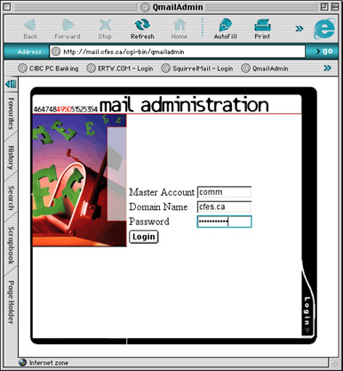
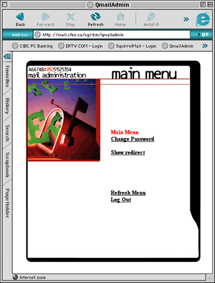
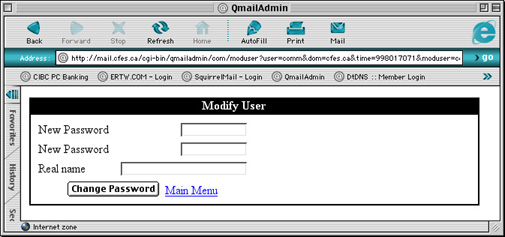
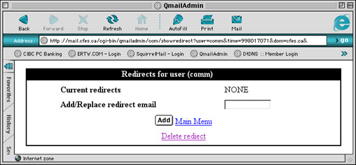

| >Main Admin Page >Email Users Guide Index |
The application used to administer your account is called QmailAdmin. It is normally accessed by going to the URL https://mail.<server.name>/cgi-bin/qmailadmin.
When you go to the QmailAdmin main page you will be presented with the following screen:

To log in simple enter your username in the Master Account field, and Domain Name and Password into the appropriate fields and select Login.
Once logged in you will be presented with the following page:

From here you can change your password using the Change Password link and create a forward from your account using the Show redirect link.
When you choose Change Password from the main menu you will be presented with the following page:

To change your password simple enter your new password into the two New Password and select Change Password. You do not need to worry about the Real Name field as it is only ever seen by you and the administrator.
If you wish to have your email forward from this account to another account you can do that by selecting Show redirect from the main menu. When you do thi s you will be presented with the following page:

To enable email forwarding simple enter an email address into the Add/Replace redirect email field and hit the Add button. If you return back to the Redirect for user page you will be presented with something similar to this:
If you wish to remove the forward simple click the Delete redirect link. If you wish to change the forwarding address simple enter the new address into the Add/Replace redirect email field and select Add again.{main}
| >Main Admin Page >Email Users Guide Index |